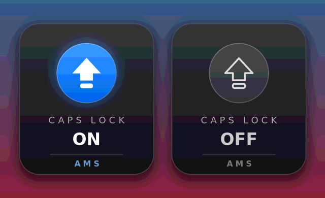

AMS Caps Lock OSD — Know your caps. Every time.
We've all been there. You're typing away — a message, a password, half a report — and suddenly everything is in capitals. The damage is done before you even notice.
The tiny key that causes big problems
- Wrong passwords — Caps Lock was on the whole time.
- Shouting emails — nobody likes being yelled at.
- Retyping whole paragraphs — all because of one tiny key you can't see.
Sound familiar?
Introducing AMS Caps Lock OSD
AMS Caps Lock OSD shows a clean, beautiful popup every time you turn Caps Lock ON or OFF — right where you're typing, fading in and out in under two seconds. No settings to fiddle with. No windows to dig through. Just instant clarity.

What it does
- Instant ON / OFF feedback — a sleek indicator fades onto your screen the moment you press Caps Lock.
- Fades away on its own — it never blocks your work or steals your focus.
- Live status in your tray — blue means ON, grey means OFF, always at a glance.
- Starts with Windows — install it once, then forget it.
- Every monitor, any display — sharp on high-DPI screens, appears where you are.
- Incredibly lightweight — about 300 KB, almost zero CPU. It just sits there until you need it.
Up and running in seconds
- Download the installer (no admin rights needed).
- Click Next → Install → Finish.
- Press Caps Lock. That's it.
For Windows 10 & 11 · Free · By AMS
Download
- AMS Caps Lock OSD — Setup.exe *(recommended)*
- Portable CapsLockOSD.exe — run it without installing
Watch the 65-second demo
See AMS Caps Lock OSD in action — watch the promo on YouTube.
AMS Caps Lock OSD. Know your caps, every time.
*© 2026 AMS · Subscribe to AMS on YouTube*